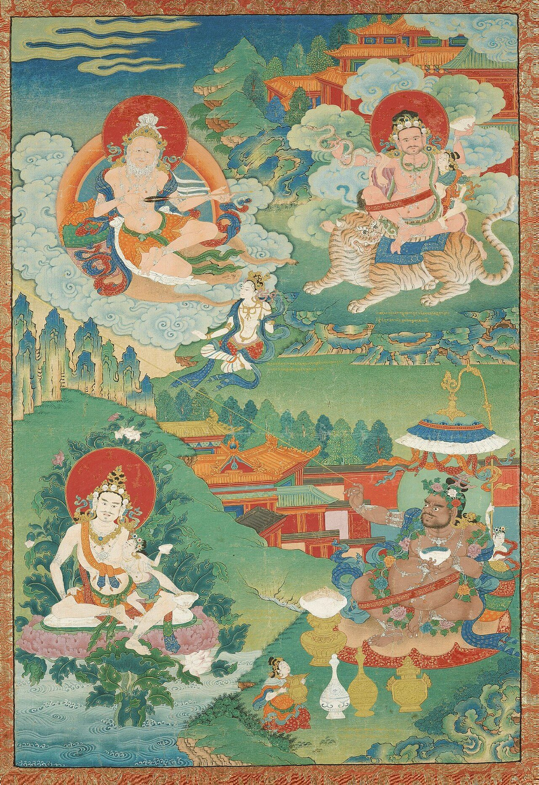
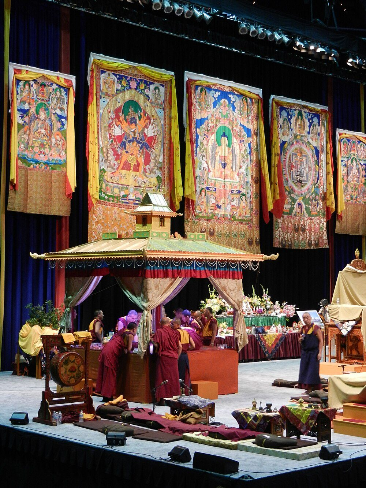

Chapter 6: Vajrayāna: The Diamond Vehicle¶
6.1 The Tantric Transformation¶
The Vajrayāna (“Diamond Vehicle” or “Thunderbolt Vehicle”) represents the third major stream of Buddhist development, emerging within the Mahāyāna. Ritual use of mantras and protective spells is old in Buddhism, but the tantras proper appear from about the seventh century CE, and the most radical “yoginī” tantras from the ninth and tenth centuries (Davidson 2002; Williams and Tribe 2000). Sometimes also called Tantrayāna (“Vehicle of Tantra”) or Mantrayāna (“Vehicle of Sacred Syllables”), the Vajrayāna introduced a radical new approach to the Buddhist path: the transformation of ordinary experience — including sensory desire, emotional energy, and the body itself — into the means of enlightenment.
The term vajra carries a double meaning: “diamond” (signifying indestructibility and clarity) and “thunderbolt” (signifying irresistible power). The Vajrayāna understands the enlightened mind as having the nature of a vajra — adamantine, luminous, and unbreakable.
6.1.1 Philosophical Foundations¶
The Vajrayāna accepts the philosophy of Madhyamaka and Yogācāra and adds to it a distinctive theory of practice (Snellgrove 1987). If all beings possess the nature of a Buddha (the Tathāgatagarbha doctrine of Chapter 5), awakening is not produced from outside but uncovered; if saṃsāra and nirvāṇa are not ultimately distinct, as Nāgārjuna had argued, the passions (kleśa) need not be suppressed but can be transformed into the material of awakening. The tantras locate that transformation in the body, which they describe as a network of channels (nāḍī), winds (prāṇa) and drops (bindu) to be worked on in yoga, and they make it depend on the teacher, who confers the consecrations that alone give access to the practice and who is to be regarded as the Buddha in person.
6.2 The Tantric Literature¶
The Vajrayāna produced a vast body of tantric literature, classified by later Tibetan scholars into four (or in some schemes, six) classes of tantra (Table 6.1).
| Class | Sanskrit | Characteristics |
|---|---|---|
| Kriyā Tantra | Kriyā-tantra | Emphasis on external ritual, purification, and recitation of mantras |
| Caryā Tantra | Caryā-tantra | Balance of external ritual and internal yoga |
| Yoga Tantra | Yoga-tantra | Emphasis on internal meditative yoga; deity visualisation |
| Highest Yoga Tantra | Anuttarayoga-tantra | The most advanced practices involving the subtle body, the transformation of passions, and the direct realisation of luminous emptiness |
6.2.1 Indian Scriptures and Their Interpreters¶
The four-class scheme is a later systematisation. The Indian texts themselves appeared over some four centuries, and modern scholars can date them only approximately (Davidson 2002; Williams and Tribe 2000). The Mahāvairocana Sūtra (Mahāvairocanābhisambodhi), probably composed in the mid-seventh century, and the Sarvatathāgatatattvasaṅgraha, of the late seventh century, set out the maṇḍala of the five Buddhas, consecration (abhiṣeka) and the practitioner’s meditative identification with a deity; both were translated into Chinese in the eighth century. The Guhyasamāja Tantra (eighth century) became the basis of two Indian exegetical schools, the “Ārya” school, whose authors took the names of Nāgārjuna and Āryadeva (they are not the Madhyamaka philosophers), and the school of Buddhajñānapāda. The “yoginī” tantras of the ninth and tenth centuries, such as the Hevajra and the Cakrasaṃvara, added cremation-ground imagery, circles of female deities and sexual yoga. The Kālacakra of the early eleventh century was the last major Indian tantra.
In the great monasteries of the Pāla period tantra became a subject of scholastic study alongside Madhyamaka and logic. Ratnākaraśānti (c. 1000) and Abhayākaragupta (fl. c. 1100), both associated with Vikramaśīla, wrote commentaries and ritual manuals as well as philosophical treatises; Abhayākaragupta’s Vajrāvalī, on the rituals of the maṇḍala, and his Niṣpannayogāvalī, which describes twenty-six maṇḍalas and their deities, became standard references in Nepal and Tibet.
Scholars have long noted close parallels between the Buddhist yoginī tantras and Śaiva tantric literature in deities, ritual and even wording. Alexis Sanderson has argued that passages of the Buddhist yoginī tantras were adapted from Śaiva texts (Sanderson 2009), and Davidson places the whole movement in the political culture of the early medieval courts (Davidson 2002); the direction and extent of borrowing remain under discussion. Buddhist tantra, its transmission to China and Japan and its relationship with Śaiva tantra are treated more fully in Volume 6 of this series (Tantra–Āgama).
6.3 The Eighty-Four Mahāsiddhas¶
Among the most colourful and significant figures in the Vajrayāna tradition are the Caturaśīti Mahāsiddha — the Eighty-Four Great Accomplished Ones. These were tantric adepts (Figure 6.1), mostly from eastern India, who lived between approximately the eighth and twelfth centuries CE. The standard list of eighty-four, with their legends, comes from a collection of biographies attributed to Abhayadatta, preserved in Tibetan (Dowman 1985). A selection is given in Table 6.2.
| Name | Occupation/Background | Teaching/Significance |
|---|---|---|
| Tilopa | Sesame grinder | Said by tradition to have received teachings directly from Vajradhara; source of the Kagyu lineage |
| Nāropa | Nālandā scholar | Six Yogas of Nāropa; guru of Marpa the Translator |
| Saraha | Brahmin / arrow-maker | Doha songs of spontaneous realisation; foundational Mahāmudrā |
| Lūipa | Prince / fish-gut eater | Overcame royal pride through extreme asceticism |
| Virūpa | Monk (of Nālandā in Tibetan tradition) | Master of the Lamdre (Path with the Result) tradition |
| Ghaṇṭāpa | Scholar | Transformed passion into realisation through tantric union |
| Kukkuripa | Dog lover | Attained realisation through compassion for a stray dog |
| Jālandhara | Brahmin | Master of the Cakrasaṃvara tantra |
| Kāṇhapa (Kṛṣṇācārya) | Yogin | “The dark one”; author of songs in the Caryāgīti; Hevajra and Cakrasaṃvara practice |
| Śabaripa (Śavari) | Hunter | Transformed the act of hunting into dharma practice |
In the legends, the Mahāsiddhas come from all walks of life — kings and beggars, scholars and illiterates, brāhmaṇas and outcastes, men and women; the list of eighty-four includes several women, such as Lakṣmīṅkarā and the sisters Mekhalā and Kanakhalā. Their songs (dohā, caryāgīti) and stories express the Vajrayāna principle that enlightenment is accessible to all, regardless of social station, and that the most ordinary activities can become vehicles for awakening.
The Caryāgīti or Caryāpada, a collection of tantric songs attributed to siddhas such as Kāṇhapa, Lūipa and Śabaripa, composed perhaps between the tenth and twelfth centuries, preserves some of the earliest literature in the early forms of Bengali, Assamese and Odia.

_-_(multiple_figures)18th_century_Boston_MFA.jpg){kind=link}
6.4 The Kālacakra Tantra¶
The Kālacakra Tantra (“Wheel of Time”) is the last of the major Indian Buddhist tantras. Tradition holds that the Buddha taught it at Dhānyakaṭaka (in present-day Andhra Pradesh) and that it was preserved in the hidden kingdom of Śambhala; historians date its composition to the early eleventh century, and its calendar is reckoned from 1027 CE. (The Sanskrit word kālacakra is also used by Jain authors, in a different sense, for the cycle of cosmic time described in Chapter 11.) The tantra is organised around a correspondence between three “wheels of time”: an outer Kālacakra, the cosmos with its planets, seasons and ages, for which the text sets out an elaborate astronomical and calendrical system; an inner Kālacakra, the body with its channels, winds and drops; and an “other” (alternative) Kālacakra, the path of practice by which the outer and inner cycles are mastered and transcended (Wallace 2001). Its astronomy, which combines Indian methods with features of its own, made it one of the few Buddhist texts with a substantial mathematical content, and it became the basis of the Tibetan calendar. It is also unusual in referring explicitly to Islam and in foreseeing a final war against the “barbarians” (mleccha), a sign of the conditions in north-western India at the time of its composition.
6.5 Mantra, Maṇḍala and the Teacher¶
A mantra (traditionally glossed “instrument of the mind”) is a sacred syllable or phrase recited as a vehicle of concentration and of identification with a deity. The best-known Buddhist mantra is the six-syllable formula of Avalokiteśvara, the bodhisattva of compassion:
Oṃ Maṇi Padme Hūṃ
The popular rendering “the jewel in the lotus” is grammatically doubtful; maṇipadme is probably a vocative addressed to a female deity, “O jewel-lotus one” (Lopez 1998).
The maṇḍala (“circle”) is a diagram of the palace of a deity and its retinue, drawn in coloured powders, painted or visualised. In tantric ritual the practitioner visualises himself or herself at its centre, identified with the presiding deity, while hand gestures (mudrā) engage the body in the same act. None of this is open to the uninitiated. Access to a tantra requires consecration (abhiṣeka) by a qualified teacher (guru; Tibetan lama, bla ma), and the texts demand that the pupil see the teacher as inseparable from the Buddha. The secrecy and the authority of the teacher distinguish tantric practice from the public teaching of the sūtras.
6.6 Goddesses and Women in Tantric Buddhism¶
Female deities have a larger place in the Vajrayāna than in any earlier form of Buddhism (Shaw 2006). The most widely worshipped is Tārā, the “saviour”, whose images appear in the cave monasteries of western India by the sixth or seventh century; she is invoked as a protector from the “eight great perils” — lions, elephants, fire, snakes, robbers, fetters, floods and demons — and became, in Pāla Bengal and later in Tibet, a figure of devotion in her own right, in green and white forms and in a set of twenty-one manifestations. The Perfection of Wisdom itself was personified as the goddess Prajñāpāramitā, “mother of all Buddhas”, whose images were made in the Pāla monasteries and in Java. The yoginī tantras added fierce female deities such as Vajrayoginī and Vajravārāhī and the ḍākinīs, female figures of the cremation ground who initiate and guide the practitioner. Older goddesses also continued to be worshipped: Hārītī, an ogress converted by the Buddha into a protector of children, appears with her consort Pāñcika in the monasteries of Ajanta and Gandhāra, and Vasudhārā, a goddess of abundance, became especially popular among the Newar Buddhists of Nepal.
The prominence of female deities does not by itself show that women held high status in tantric communities. The texts are written mostly from the standpoint of a male practitioner, for whom women appear as consorts in sexual yoga. Miranda Shaw has argued that women were active and sometimes leading participants, citing the female siddhas and the songs and treatises attributed to women; other scholars read the same evidence more cautiously (Shaw 2006; Davidson 2002).
6.7 Vajrayāna in India: Sites and Patrons¶
The Vajrayāna was an Indian development, and its main centres were the monasteries of Bihar, Bengal and Odisha under the Pāla and Bhauma-Kara kings (8th–12th centuries; Table 6.3). In these institutions tantra was studied alongside Madhyamaka and logic: Vikramaśīla was founded by the Pāla king Dharmapāla and became the principal centre of tantric scholarship in its last two centuries, and Somapura (Paharpur) and Jagaddala in Bengal were large monasteries of the same network. The Odishan monasteries of Ratnagiri, Udayagiri and Lalitgiri have yielded the richest body of tantric Buddhist sculpture in India, including images of Tārā, of the five Buddhas of the maṇḍala and of fierce deities (Chapter 7, Section 7.11.4). The mahāsiddhas’ songs in the Caryāpada show the same tradition expressed in the early vernaculars of the east. At the other end of the subcontinent, the Himalayan valleys of Kashmir, Ladakh and Spiti linked Indian tantric Buddhism with western Tibet; the monastery of Tabo (996) still preserves murals in a style derived from Kashmir.
| Site | Location | Significance |
|---|---|---|
| Vikramaśīla | Bihar | Premier centre of Vajrayāna learning; ordination centre for Tibetan monks |
| Odantapurī | Bihar | Model for the first Tibetan monastery (Samye) |
| Jagaddala | Bengal (now Bangladesh) | Late Pāla foundation (Rāmapāla); centre of tantric learning and of translation for Tibet |
| Somapura Mahāvihāra | Bangladesh | One of the largest Buddhist monasteries; UNESCO World Heritage Site |
| Ratnagiri, Udayagiri, Lalitgiri | Odisha | “Diamond Triangle” of tantric Buddhist sites; major sculptural remains |
| Tabo Monastery | Himachal Pradesh | Founded 996 CE; preserves some of the finest Buddhist murals in India |
6.8 The Transmission to Tibet¶
Tibetan Buddhism took its texts, its monastic discipline and most of its tantric lineages from India, in two main periods (Snellgrove 1987; Samuel 1993). In the first, under the Tibetan kings of the seventh to ninth centuries, the Nālandā scholar Śāntarakṣita and the tantric master Padmasambhava were invited to Tibet, and the first monastery was founded at Samye on the model, Tibetan tradition says, of Odantapurī. Kamalaśīla’s three Bhāvanākramas (“Stages of Meditation”), written in the late eighth century, set out a gradual path combining calm (śamatha) and analytical insight (vipaśyanā); according to Tibetan histories they were connected with a debate at Samye (c. 792–794) in which Kamalaśīla’s gradualism prevailed over the “sudden” approach of the Chinese Chan master Moheyan. Modern scholars regard the accounts of the debate as partly legendary, but the Indian gradual path did become the norm in Tibet (Williams 2009; Samuel 1993).
The second period, from the late tenth century, began after the collapse of the Tibetan monarchy and drew on the Pāla monasteries and on Kashmir. Atiśa of Vikramaśīla (Chapter 7) taught in Tibet from 1042; Tibetan translators studied in Bihar, Bengal, Kashmir and Nepal; and the lineages from which the later Tibetan schools descend were brought from India in these decades. The Kagyu (bka’ brgyud) school traces its teaching through Marpa to the Indian siddhas Tilopa and Nāropa, whose “six yogas” of inner heat, illusory body, clear light, dream, intermediate state and transference of consciousness are Indian tantric practices, and its doctrine of the “great seal” (mahāmudrā) to the songs of Saraha; the Sakya (sa skya) school took its “path and result” (lam ’bras) teachings from the siddha Virūpa; and the Kadam school of Atiśa’s followers was later absorbed into the Gelug (dge lugs) of Tsongkhapa (1357–1419). The Nyingma (rnying ma) school, which looks back to Padmasambhava, also preserves a “great perfection” (rdzogs chen) teaching whose developed form historians regard as largely Tibetan (Samuel 1993). Many Indian works, tantric and philosophical, survive only in their Tibetan translations. The Tibetan schools themselves, and Buddhist tantra in China and Japan, are treated in Volume 6 (Tantra–Āgama).
6.9 Vajrayāna Art and Iconography¶
The Vajrayāna produced a visual art in which images are supports for ritual and visualisation rather than objects of contemplation in their own right. Pāla bronzes and stone sculpture, illustrated palm-leaf manuscripts, and later the painted scrolls (thang ka) and sand maṇḍalas of the Himalayan monasteries (Figure 6.2) depict a pantheon of Buddhas, bodhisattvas, protectors and ḍākinīs whose forms, colours and attributes are fixed by the ritual texts, such as Abhayākaragupta’s manuals.


The Vajrayāna is often presented, especially in popular writing, as a Tibetan religion. Its history points the other way. Its scriptures, its exegetical schools and its ritual manuals were composed in the monasteries and courts of eastern and north-western India between the seventh and twelfth centuries, in close and sometimes competitive contact with Śaiva tantra; and it was the destruction of those monasteries around 1200, not any lack of vitality, that ended its Indian history. What survives in the Himalayan regions, in Tibet, Mongolia and the Newar community of Nepal is, to a large extent, the last phase of Indian Buddhism preserved outside India.